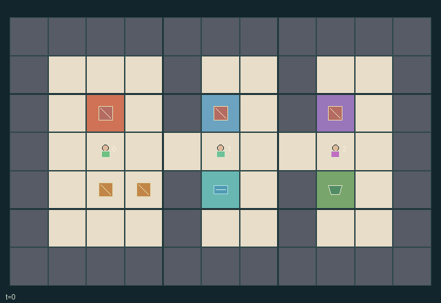

GI112 · Shared-Heat Workshop: Three Specialists, Two Conserved Workpieces

Forge, temper, assemble and physically ship both workpieces. A new fully shipped piece pays every specialist +1; any non-wait legal action costs its actor 1/128. Intermediate stages do not pay delivery reward.
Identity and original contract
3 independently actionable roles; 11 discrete commands per role; 112 native observation columns per role; original horizon 96 steps. Declared per-step reward range: -1 to 2. Observation regime: partially_observable.
Source SHA-256: 14b58f26d52d8cb617abefcb9824e0a4f3fa63399eb7f8f670e17a9e05ca236a
The objective, rewards, population, map and horizon remain original. A preview is not a success claim.
Objective and gameplay
Forge, temper, assemble and physically ship both workpieces. A new fully shipped piece pays every specialist +1; any non-wait legal action costs its actor 1/128. Intermediate stages do not pay delivery reward.
Different specialists are required for successive stages. Carriage is capacity one; consent-based adjacent handoff or floor exchange conserves each piece. Work heats all stations, one shared valve consumes coolant, and narrow partitions constrain transport and passing.
- Two physical pieces must pass raw, forged, tempered and assembled stages before shipping.
- Only worker 0 forges, worker 1 tempers and worker 2 assembles, each while carrying the appropriate piece beside its station.
- Hands hold one piece. A handoff requires adjacent OFFER and ACCEPT actions; floor pickup/drop is also possible.
- A processing action adds four heat to its own station and two to every other station. Passive cooling removes one per transition.
- Work thresholds are six, five and seven for forge, quench and press. Shared processing order rotates; earlier work can block later work.
- One valve use per step consumes one of six coolant units and removes three heat from every station. Excess heat above twelve is safety-vented.
- The two one-cell partition passages make transport order matter. Agents cannot swap squares or enter occupied squares.
- Only fully assembled shipping pays +1 to every worker. Each non-wait action costs its actor 1/128. Both shipments terminate; 96 steps truncate otherwise.
Ending: Both piece identities have been dispatched at shipping after stage 3; otherwise truncate at 96.
What this game explores
Resource commons & externalities: An action changes a persistent resource or burden that another role also encounters. Compare extraction with maintenance and record the downstream resource trajectory.
Complementary production & service: A useful outcome requires ordered stages, scarce equipment or another role's capability. Measure real completed products and resource circulation rather than counting intermediate actions as success.
Joint transport & shared access: Positions, load geometry, occupancy and persistent access constrain whose action can succeed next. Distinguish physical handoff, shared controls and simultaneous force from a cosmetic cooperation label.
These are questions supported by rule structure, not observed learning effects.
Play it: operating walkthrough
crucibles play --game gi112Keep Python running and open its printed address. Select this game, set a seed and press Create session. The game itself is always English.
Assign a role range to Host with Assign / take over, or Assign all roles. Invite a second participant with Create player invitation, then assign a disjoint subset. Every original role is available.
For every owned role choose a legal command and press Queue. Arrow keys / WASD queue a declared directional action for the current role camera when available. Space or Advance one joint step advances everyone together. Non-directional games use the selectors.
Unqueued roles use the labelled untrained uniform-legal policy. Take over or release roles before the next step without resetting. Full-state debug is privileged and permanently logged; role cameras preserve permissions. Close the session to retain logs. Server restart does not restore sessions.
Complete command reference
IDs and English labels exactly match the manifest. Availability depends on role, resources, location and phase. An available action can still have no productive effect.
0·wait
1·move north
2·move east
3·move south
4·move west
5·pick up lowest-index nearby floor piece or drop carried piece
6·process carried piece at own specialist station
7·open shared cooling valve at tank
8·offer carried piece to adjacent receiver
9·accept offered piece with empty hands
10·dispatch assembled piece beside shipping dock
Roles and capability identifiers
These original role names describe capabilities, not interchangeable skins. Check each owned role's legal selector before planning handoffs.
agent_0·forge specialist: stage 0 to 1 at forge
agent_1·tempering specialist: stage 1 to 2 at quench
agent_2·assembly specialist: stage 2 to 3 at press
Information and observation permissions
Public layout, fixed role identity, clock and shipped count. Other agents, active workpieces, station heat and tank quantity are visible only within Manhattan radius 3. Dynamic scene attributes use the same masks; private work events and heat-vent records are not global event channels.
The GIF is full-state debug and may reveal hidden entities or private state. Train on obs[agent], not the picture, state tree or another role's private row. Field slices and visibility are in the original manifest.
Reinforcement-learning integration
import jax
from crucibles_jaxmarl import make
env = make("gi112")
key = jax.random.PRNGKey(0)
key, rk, ak, sk = jax.random.split(key, 4)
obs, state = jax.jit(env.reset)(rk)
actions = env.sample_actions(ak, state)
obs, state, rewards, dones, info = jax.jit(env.step_env)(sk, state, actions)
done = dones["__all__"]Observations are float32 vectors of width 112; actions are scalar int32; masks have 11 entries. Supply all 3 roles each transition. Masked sampling is an engineering reference, not a trained learner.
step_env retains terminal data without reset. step performs outer autoreset and keeps terminal data in info["raw_state"] and info["raw_observation"]. Use dones["__all__"] for episode boundaries; separate completion, failure and time limit in analysis.
JIT or vmap equal identities and shapes. Split independent reset, policy and transition keys. Group different shapes explicitly; do not shrink the population or horizon. Host rendering stays outside training.
Training questions and fair evaluation
Define valid completion from the objective before fitting. Preserve original rewards and also report real deliveries/services, losses, resource state, unresolved episodes and per-role returns. Animation is not a reward signal.
An action changes a persistent resource or burden that another role also encounters. Compare extraction with maintenance and record the downstream resource trajectory.
A useful outcome requires ordered stages, scarce equipment or another role's capability. Measure real completed products and resource circulation rather than counting intermediate actions as success.
Positions, load geometry, occupancy and persistent access constrain whose action can succeed next. Distinguish physical handoff, shared controls and simultaneous force from a cosmetic cooperation label.
Compare memory, communication or centralized critics under matched actor information. Declare critic access; keep actor inputs role-filtered. Match partner/opponent distributions, masks, compute and checkpoint selection. Final tests never enter fitting or selection.
Independent training runs or source-pairing blocks are inferential units; episodes from one policy are not independent training replications. Save hashes, keys, versions, device, time and cost. Negative, zero, failed and indeterminate outcomes are valid. No trained checkpoint or target score is supplied.
Classification and evidence
Overlapping editorial labels are reading aids, not proof of novelty, difficulty, strategic equivalence or learning effects.
- Resource commons & externalities
- Evidence
manifest.task.interaction: Different specialists are required for successive stages. Carriage is capacity one; consent-based adjacent handoff or floor exchange conserves each piece. Work heats all stations, one shared valve consumes coolant, and narrow partitions constrain transport and passing.
- Evidence
manifest.task.observation_access: Public layout, fixed role identity, clock and shipped count. Other agents, active workpieces, station heat and tank quantity are visible only within Manhattan radius 3. Dynamic scene attributes use the same masks; private work events and heat-vent records are not global event channels.
- Evidence
scene.rules.3: A processing action adds four heat to its own station and two to every other station. Passive cooling removes one per transition.
- Complementary production & service
- Evidence
manifest.task.objective: Forge, temper, assemble and physically ship both workpieces. A new fully shipped piece pays every specialist +1; any non-wait legal action costs its actor 1/128. Intermediate stages do not pay delivery reward.
- Evidence
manifest.task.observation_access: Public layout, fixed role identity, clock and shipped count. Other agents, active workpieces, station heat and tank quantity are visible only within Manhattan radius 3. Dynamic scene attributes use the same masks; private work events and heat-vent records are not global event channels.
- Evidence
manifest.actions.10: dispatch assembled piece beside shipping dock
- Joint transport & shared access
- Evidence
manifest.task.objective: Forge, temper, assemble and physically ship both workpieces. A new fully shipped piece pays every specialist +1; any non-wait legal action costs its actor 1/128. Intermediate stages do not pay delivery reward.
- Evidence
manifest.task.interaction: Different specialists are required for successive stages. Carriage is capacity one; consent-based adjacent handoff or floor exchange conserves each piece. Work heats all stations, one shared valve consumes coolant, and narrow partitions constrain transport and passing.
- Evidence
manifest.actions.5: pick up lowest-index nearby floor piece or drop carried piece
Source, receipts and preview limits
The world-only English GIF replays saved untrained legal actions through the original kernel. At most 25 actual endpoints include initial and terminal state; no invented interpolation. It is full-state debug, not the role observation.
Original source, observation slices, manifest and mechanism
Native receipt · Presentation receipt
Engineering passes do not establish learning. Nonzero floating differences remain recorded and undetermined; no new tolerance was introduced. Human scores remain unverified.